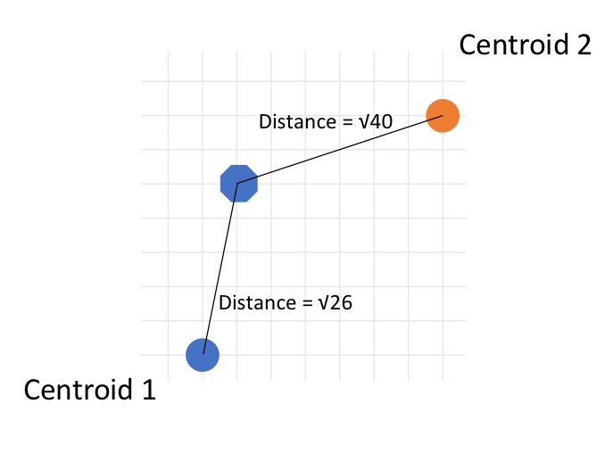
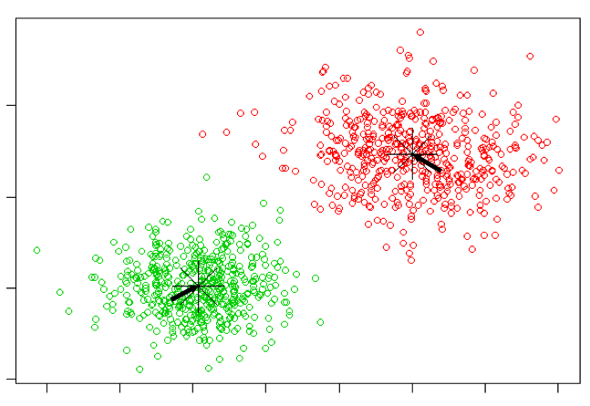

Group Activity Plot 2
Figure Credit: https://blogs.oracle.com/bigdata/k-means-clustering-machine-learning
K-Means: How does it work?
- Here are K-means algorithm steps:
- Step 1: Choose a K: it represents the number of centroids. Hard to decide… especially for high dimensional data. You will learn it in your homework 2.
- Step 2: Randomly selected centroids positions
- Step 3: Calculate distances between each data point with K centroids and decide cluster response (closer)
- Step 4: Calculate the mean value of each cluster, use the mean value as the new centroid
- Step 5: repeat step 3 and 4 until you have repeated N (maybe 100) times or centroids do not change anymore.


Figure Credit: https://blogs.oracle.com/bigdata/k-means-clustering-machine-learning
Homework 1: Group Homework
cont. here!
An Example

Example is based on: https://www.youtube.com/watch?v=4b5d3muPQmA
K-Means: Advantages vs Disadvantages
Advantages:
- Easy to implement.
- K-means model dynamically updated: centroid can be updated if new dataset is added.
Disadvantages:
- Hard to guess K
- Initial centroid can impact results
- K-means is time consuming. Need to calculate distances between new centroid in every loop.
- K-means method may not find out the global best solution. It sometimes returns local optimum.
- K-means is limited to linear cluster boundaries.